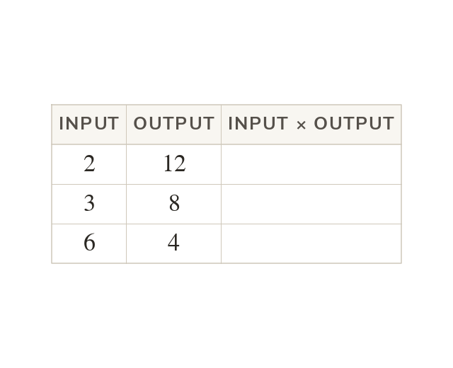
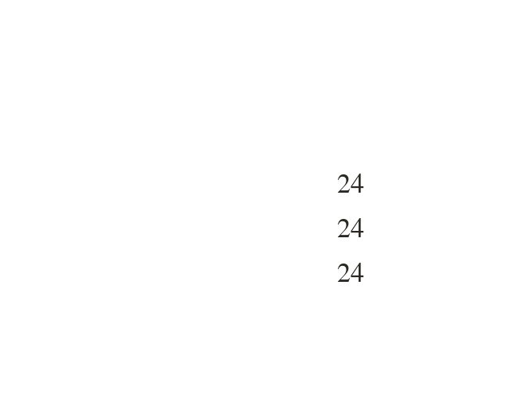
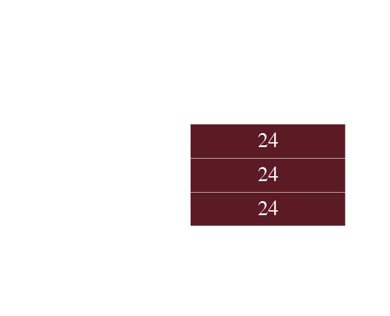
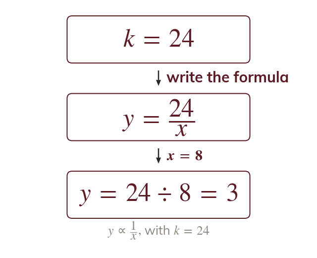
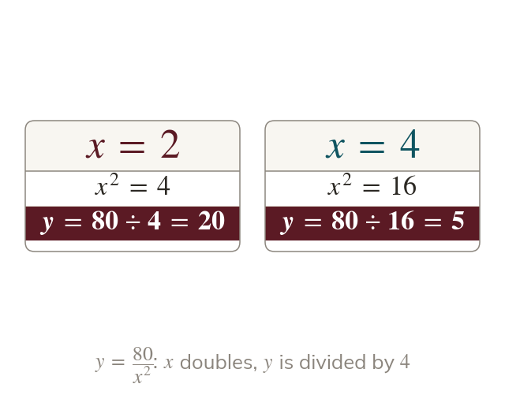
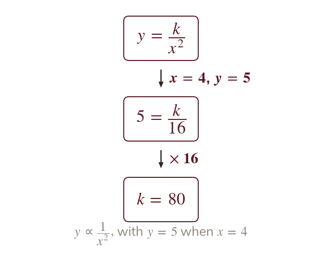

Every pair multiplies to k
In , every pair of values multiplies to One pair gives by multiplying.
Light, sound and gravity all weaken with the square of the distance from their source. Inverse proportion formulas model them, and k is found by multiplying, not dividing.
Work down the page at your own pace. Write every answer in your book first, then click to check it.
Read each card, then follow the worked examples one step at a time.



In , every pair of values multiplies to One pair gives by multiplying.

Once k is known, k divided by x gives y. Doubling x halves y.
Pick an answer. If it's wrong, the feedback tells you which mistake it was.
Read each card, then follow the worked examples one step at a time.

In the input is squared before is divided by it. Doubling divides by

For is multiplied by Square first, then multiply.
Pick an answer. If it's wrong, the feedback tells you which mistake it was.
Finished? Next lesson: 10H.20.1 Bar Charts and Histograms.
For each skill, tap the one that is true for you today. Your Revise pages start with anything you mark Not yet.
Your ratings are saved on this device only.
Log in, then search for a code to practise that skill.
Videos, worksheets and more on each part of this lesson.